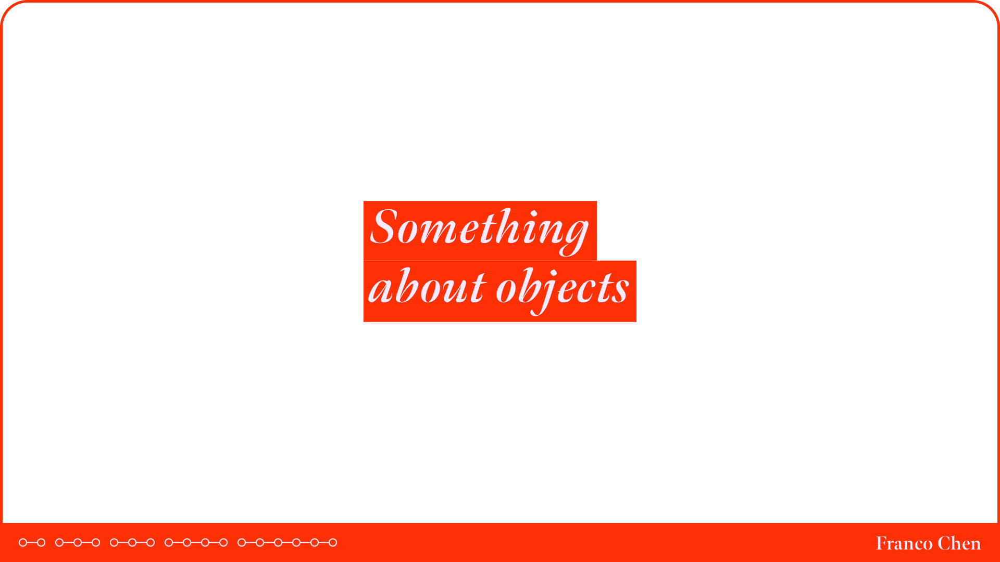

10.18 Midterm Presentation
The following are the slides to my midterm presentation. The intent of this presentation is to have investigated all of the research that's been collected
up to this point, and to form a concrete research question that will serve as the core of the project leading up to the final proposal.
We start this presentation off with motive. My motive for this project is twofold - one, growing up as an only child in a poor family has shaped the way I
view objects, and two, the sheer amount of discarded objects we come across on a daily basis. The objects we had were limited, and since I had no siblings,
most of my time was spent around the few objects I had. This development in my childhood has resulted in an empathetical view of objects that makes it difficult
for me to let go of objects. And if we take this outlook to the current day, I simply feel sad for the discarded objects we see around us.
Moving forward, I continue the presentation with conclusions I drew from the research I collected. Objects can be categorized into two functions - utility and
artifact. Objects that serve to assist us in performing the everyday rigors of life are considered utilitarian. Objects that serve to be occupiers of our memories
without serving a utility function are considered artifactual. Utility objects have agency (or worth) because they have value, and artifactual objects have agency
because they are represented as culturally significant or personally meaningful. While this is a very broad way of categorizing objects, it is a way to quickly paint
the landscape of the factors that determine an object's worth. It should be understood that the true worth of an object is much more nuanced than this breakdown, but
that is an anthropological examination worthy of its own field (which exists partially as garbology).
Framing an object's worth around agency then allows for us to investigate the opposite scenario, if an object has none of these attributes. I argue that the only
outlook for an object in this standing is to be discarded. This transition of an object's agency can be found in how the objects are presented. As we allocate objects
farther than our domestic reach, they quickly lose agency and worth. Consider the transition of a mantlepiece relegated to a storage facility, and finally a landfill.
So, we come to the climax of the presentation. If, then, an object has no agency, how can we give that back? In this last part of the presentation, three approaches are
proposed - transformation, recontextualization, and an audience. All of these approaches allow us to view objects in a different light, and by doing so, asks us to
consider the object.
